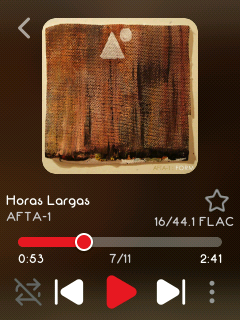
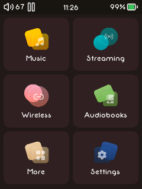
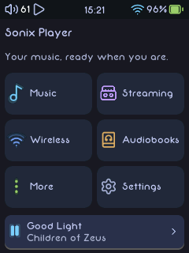

Make the sound yours
Two 10-band parametric EQ profiles, AutoEq presets and MSEB let you shape the sound for the headphones you are actually wearing — then switch profiles in one tap.
Custom firmware · TempoTec Variations V1

Your music, ready when you are. Sonix gives your V1 the sound control, offline music and little extras the stock player never had — tuned for the screen you already own, built on the official 1.3 package, and ready to flash from one file.
Sound that fitsPEQ, AutoEq, MSEB
Music that staysOffline caches & card library
A player with soulSampler, pet, themes, games
Why flash it
Two 10-band parametric EQ profiles, AutoEq presets and MSEB let you shape the sound for the headphones you are actually wearing — then switch profiles in one tap.
Your card library gets faster browsing and cover grids; Qobuz, Subsonic and WebDAV downloads stay on the microSD. No signal, no problem — your music is already there.
A 16-pad sampler, tag editor, listening stats, a pet that grows with you, custom themes and Game Boy games turn a familiar DAP into something you want to pick up.
Still your hardware, still your card. The package is built from the official vendor 1.3 update — it replaces the music app, not the device.
Inside the firmware
Optional modules live under Settings → Plugins, so pages you never use stay switched off and out of RAM.
Two profiles, numeric band entry, AutoEq presets and headroom control. Draw the curve on a PC or tune it on the V1.
EqualizerUp to 24-bit/192 kHz FLAC, persistent sign-in and downloads to Music/Qobuz Downloads. Your favourites travel with you.
Stream from your own server or save albums to the card for offline listening. Self-signed certificates are supported.
Streaming → SubsonicBrowse a network folder and save tracks or a whole album to Music/Network Downloads, then play locally.
Start hosting on one V1, join from another on the same Wi-Fi, and hear the same track in sync.
Streaming → Listen TogetherSixteen WAV pads, slicing and chromatic pitch, one-bar overdubs, live filter / echo / drive and stereo WAV recording to the card.
More → Tape DeckEdit FLAC, MP3, M4A, AAC, Opus and Ogg tags on the device, and search for cover art over Wi-Fi.
More → Tag ManagerPair by QR or session code, then drop whole albums onto the microSD with their folder paths intact.
Wireless → TransferBass Pulse, Energy Glow or Rainbow Breath, battery and upload blink cues — and a true off switch even while charging.
Settings → PowerSee what you heard by week, month, year or all time — your own wrapped-style recap of top tracks, albums and artists.
Music → StatsFour covers at a time, with optional folder artwork and cover grids in the browser.
Settings → Music → LibraryMark two points from the track menu and repeat a passage, with both markers visible on the progress bar.
Now Playing → Track menuVoltage, estimated runtime, a saved baseline and charge history in one place.
Settings → SystemA companion that grows from the music you hear, with daily goals, Musical Notes and a wardrobe.
More → PetGame Boy / GBC with a cover grid and game-audio mute, plus 2048, Snake, Dino and Flappy Bird.
More → Games

Quick install & safety
For the TempoTec Variations V1 only. Keep the player charged and let the update finish without interruption.
Keep the official v1.upt and v1_md5.txt somewhere safe — they are your way back.
Put the latest v1.upt in the root of your microSD card, then run the V1's built-in firmware updater.
Copy the original vendor files back to the card root and use the same updater to return to stock.
Back up your music first. Need details? Read the full guide.
Latest release
The download button above always resolves the newest v1.upt from GitHub Releases. Here is exactly what it is serving right now.
Fetching release details…
Maintainers: GitHub Pages cannot set custom headers, so coi-serviceworker.js lives at the site root for WASM pthreads. All local paths stay relative (./assets/…, ./emulator/…) for the project subpath. See DEPLOYMENT.md.